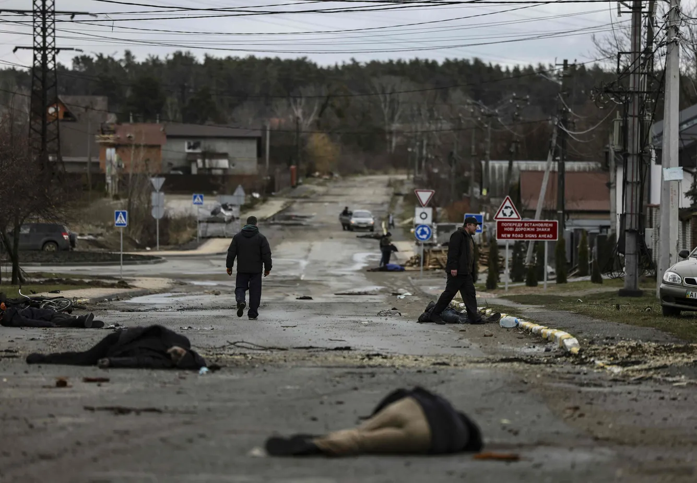
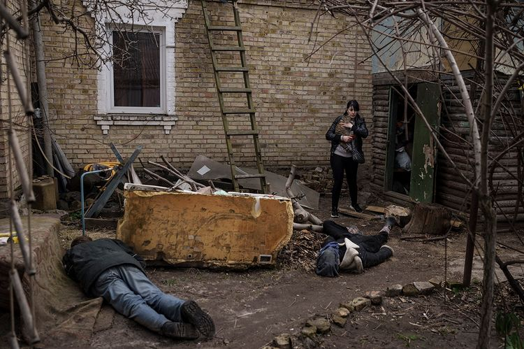
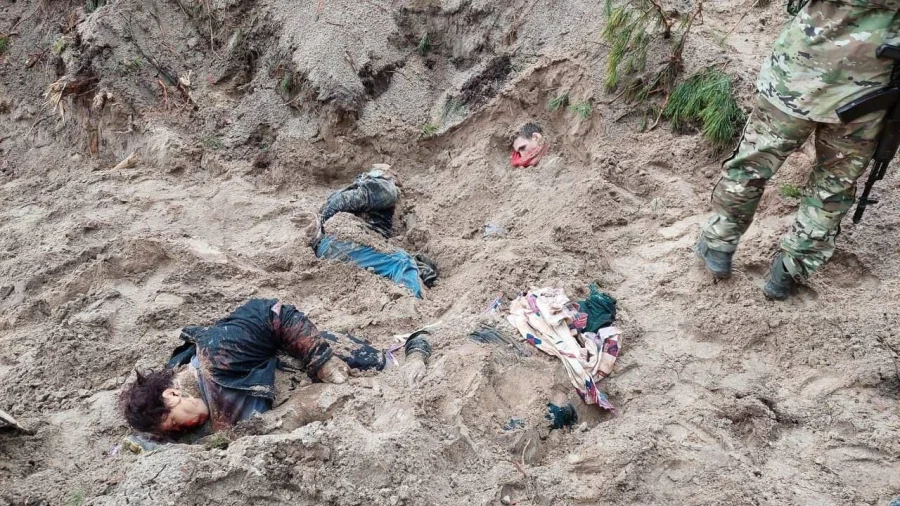
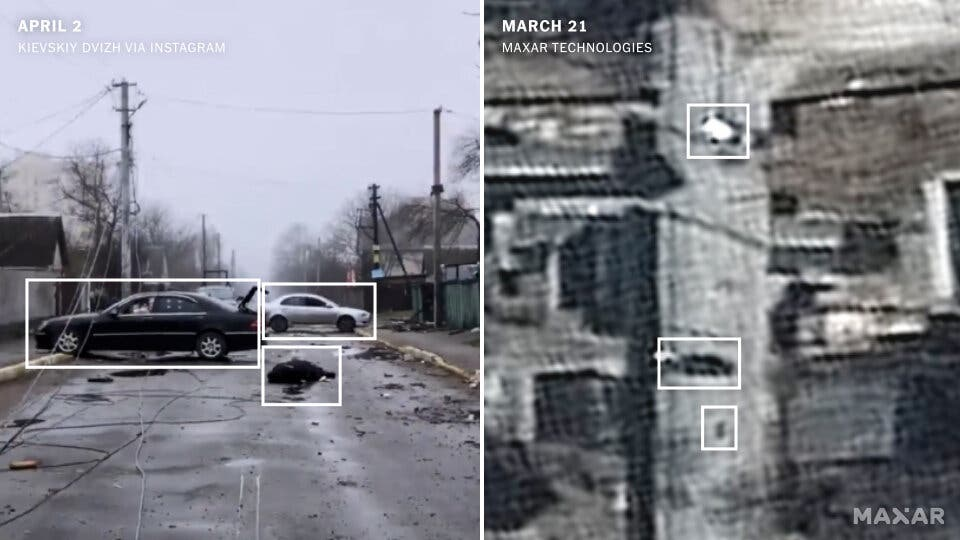

On February 24th, the Russian army invaded Ukraine. Hiding behind a „we are protecting the people of Donbas from genocide” claim, the Russian military is killing thousands of civilians.
According to the United Nations, so far 1,982 civilians have been killed, 162 of whom were children. But, in reality, the number of casualties is way higher: in Mariupol the number of killed people is over 20,000, as Mayor Vadym Boychenko claims, and in the Kyiv region, more than 900 dead civilians have been found, 350 of whom in the town Bucha. And the excavation of bodies is not finished yet.
On April 3rd, the Russian military retreated from the Kyiv region, leaving horrible scenes behind. As of now, in the liberated territories, over 900 dead bodies were found and sent to the coroner. Here are some images:
The Russian side has tried to convince the public that the bodies weren’t there when the Russian army left, but there is proof that this claim is false:
It is not important what the reasons and justifications for this war are; what is important is that the killing of anyone, especially civilians, cannot be justified. If you think this war should be stopped, come to the protest on the 23rd of April at 14h at Republic Square (Trg Republike).